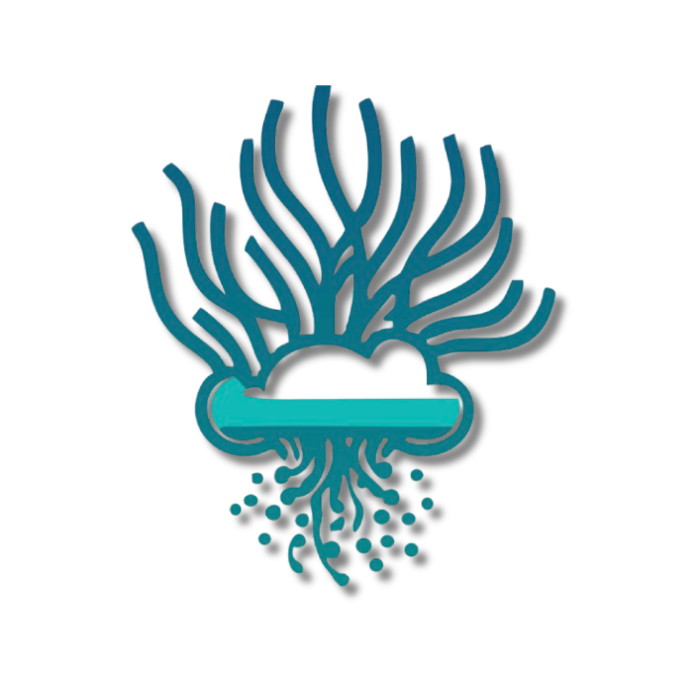
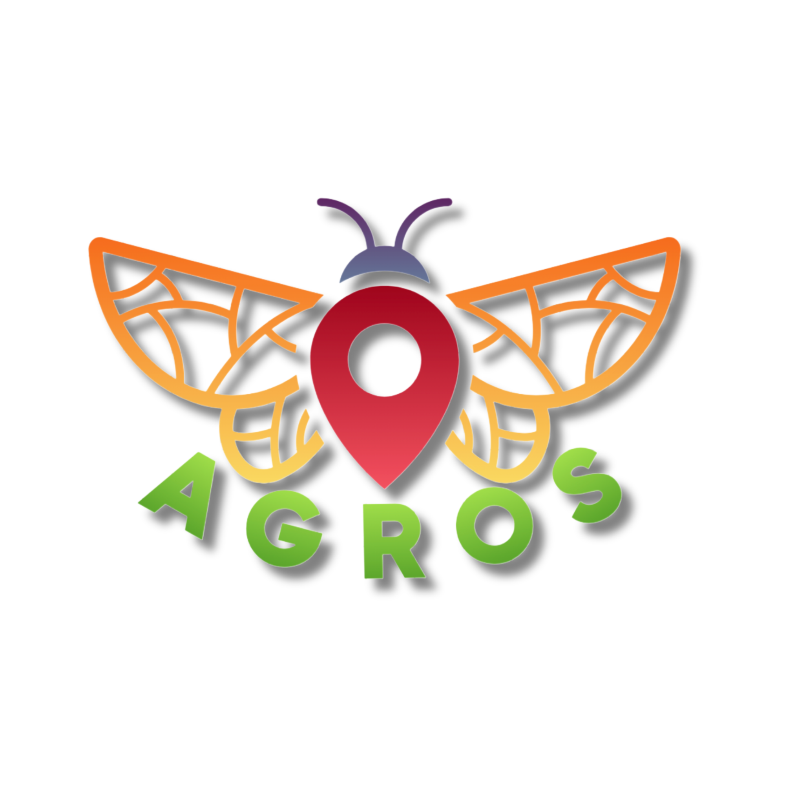
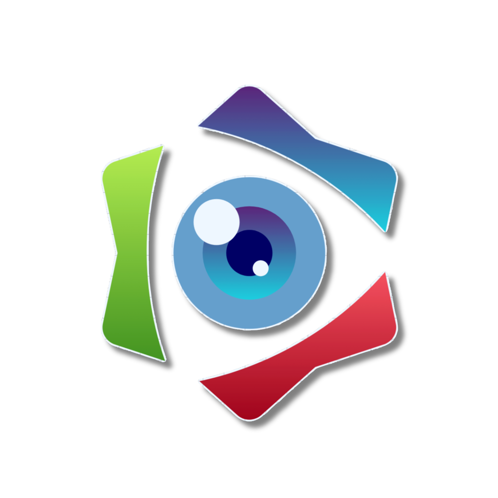

Projects
Research and entrepreneurial projects in IoT, localization, and security

Within the Next-Generation Internet (NGI) vision, POSIDONIA tackles green and human-centric network design for heterogeneous scenarios supported by the Fog-Edge-Cloud continuum. The project envisions a distributed network architecture to provide trustworthy and sustainable Location-Based Services (LBS) in IoT scenarios where threat mitigation is opportunistically offloaded between the local network and its core infrastructure. Digital Twins (DTs) are integrated to ensure interoperability and handle computationally-heavy operations. The project was carried out in collaboration with Saint Louis University (SLU), Prof. Flavio Esposito, as the US counterpart.


AGROS is a digital platform based on IoT technologies and next-generation GPS-free Location-Based Services designed to support precision agriculture. Built on the POSIDONIA architecture, it integrates a distributed network of IoT sensor nodes, an autonomous GPS-free rover (Lynxmotion platform with LIDAR-based navigation), and an edge-cloud infrastructure for real-time data processing. The system enables automated, context-aware, and human-centric agricultural operations — monitoring soil moisture, temperature, UV radiation, and capturing geolocated images for AI-based pest detection. Validated through two experimental testbeds in Sardinia (Dorgali and Sardara), the project targets small and medium agricultural enterprises seeking affordable precision farming solutions without complex GPS infrastructure.



LENS is an early-detection system for catastrophic natural events — wildfires, landslides, floods, and extreme weather — based on a distributed network of geolocated IoT nodes equipped with environmental sensors (temperature, smoke, vibration) and supported by autonomous drones and rovers for on-site verification. Built on the POSIDONIA architecture, the system leverages the Fog-Edge-Cloud continuum and LoRa communications for low-power, long-range coverage in rural and hard-to-reach areas. Edge computing enables low-latency local decisions, while machine learning models in the Fog/Cloud layers provide predictive analytics and false-positive filtering.
GreenShield aims to develop a software Intrusion Prevention System (IPS) module optimized for resource-constrained Edge IoT architectures — such as Raspberry Pi — with applications in Smart Agriculture and Industrial IoT. Based on recent research on HTTP/3 proxy evaluation on ARM platforms, the system detects threats such as Request Smuggling and Race Conditions by analyzing hardware resource consumption patterns (CPU and RAM usage), as an alternative to costly deep packet inspection. This resource-aware approach enables robust security on battery-powered or solar-powered gateways, bridging the gap between modern protocol adoption and the need to preserve operational autonomy in distributed critical infrastructures.